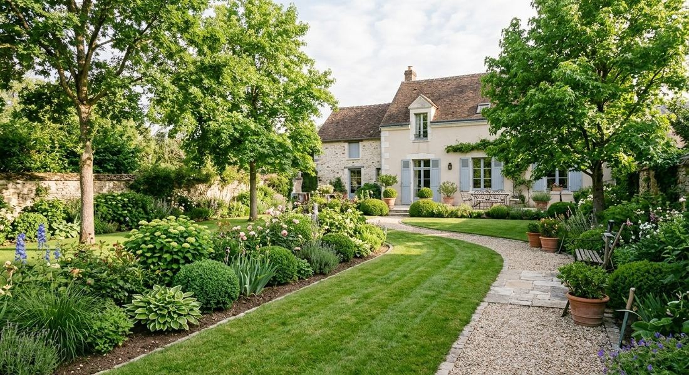
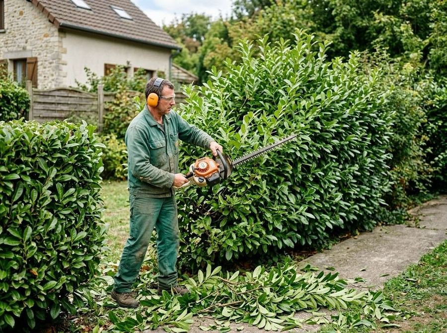
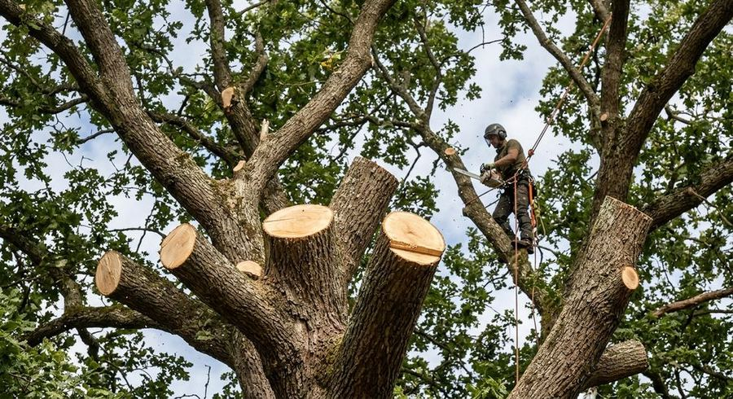
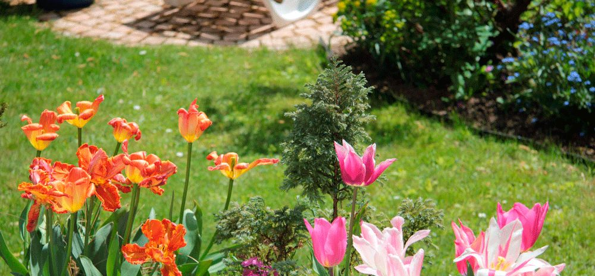

Création / Terrassement
Chaque jardin est unique : nous écoutons vos souhaits puis construisons ensemble le projet. Si besoin, terrassement : sols, courbes de niveau, allées, fondations de terrasse ou de mur.
DécouvrirIngénieur agronome passionné par l’univers du paysage végétal, Arnaud Poissonnier crée, aménage et améliore votre jardin pour en faire un véritable espace de vie, adapté à vos envies.

Chaque jardin est unique : nous écoutons vos souhaits puis construisons ensemble le projet. Si besoin, terrassement : sols, courbes de niveau, allées, fondations de terrasse ou de mur.
Découvrir
Ponctuel ou selon un calendrier défini : taille des haies, rosiers, arbustes et fruitiers, désherbage, bêchage des massifs, tonte, scarification et engazonnement.
Découvrir
Un service d’élagage certifié par les organismes de formation professionnelle : tailles dans les règles de l’art, en sécurité, en tenant compte de l’évolution des arbres.
Découvrir
Formé à l’École nationale du Paysage de Versailles, Arnaud Poissonnier a créé Au Clair du Jardin dans sa ville natale. Votre paysagiste de l’Ouest parisien intervient pour :

Quelques-uns de nos chantiers récents.
Pour toute demande de renseignements ou de devis, contactez-nous par téléphone ou à l’aide du formulaire.
06 61 97 78 28 contact@auclairdujardin.com